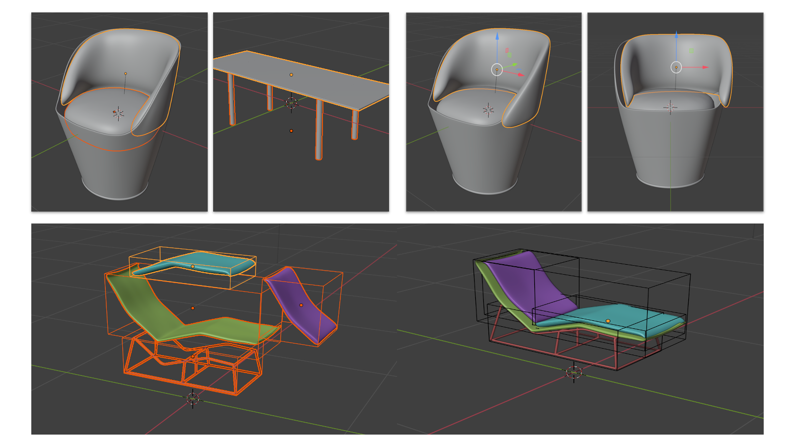
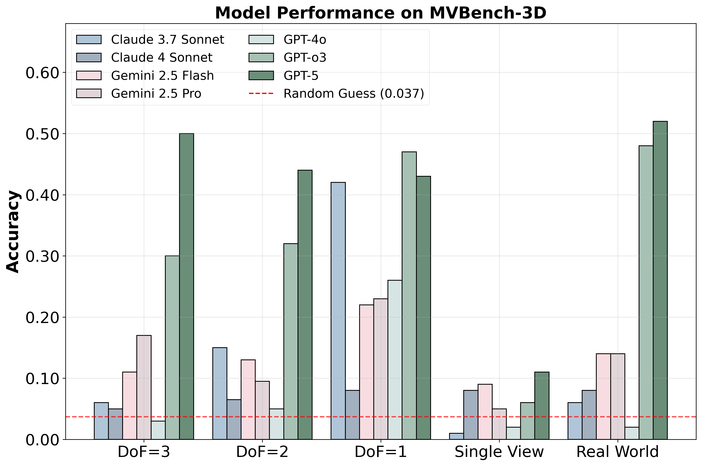
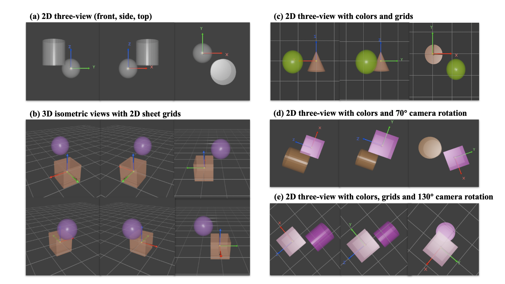
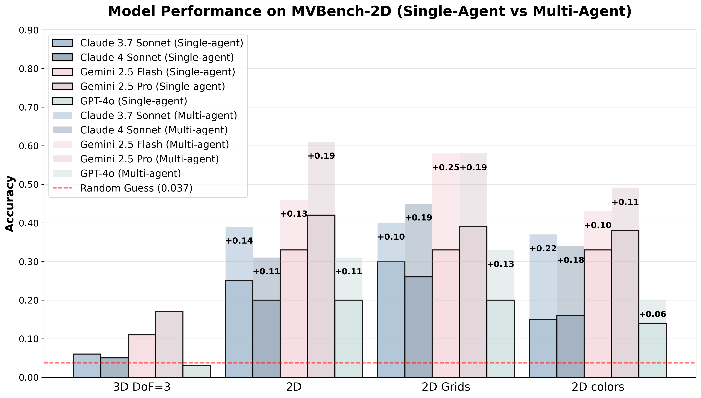
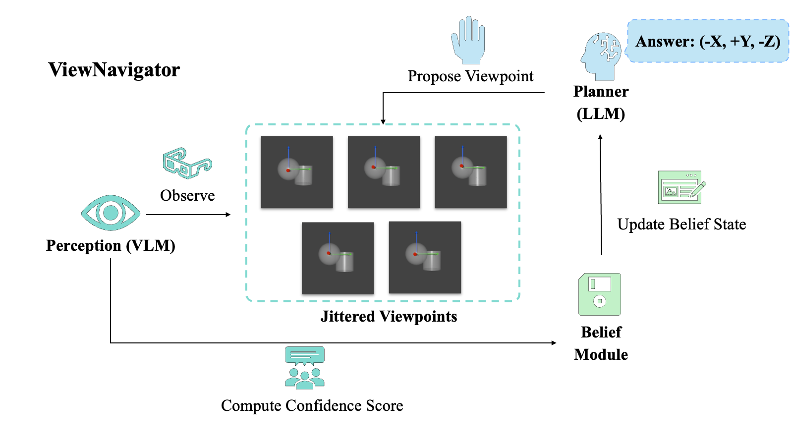
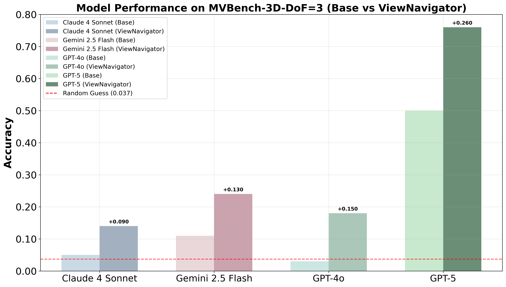

Can VLMs Reason Through Multiple Views?
1 Yale University 2 University of Edinburgh 3 Sakana AI

Figure 1: MVBench
1. Introduction
Recent advances in Large Language Models (LLMs) and Vision-Language Models (VLMs) have demonstrated remarkable progress in complex perceptual and reasoning tasks. However, effectively solving many real-world tasks fundamentally depends on the ability to perceive and reason about scenes from multiple viewpoints.
Humans naturally perform multi-angle observations to construct coherent mental models of objects, resolving perceptual ambiguities that arise from single viewpoints. This ability is crucial when assembling complex objects, where each component must be rotated and inspected from multiple viewpoints to determine how it connects with others.
Current spatial reasoning benchmarks primarily assess single-view or few-view understanding, without testing the fundamental ability of VLMs to integrate partial visual evidence from multiple perspectives into a unified 3D understanding. We address this gap by introducing MVBench.
Our Contributions
- We introduce MVBench, a comprehensive and extensible benchmark for evaluating VLMs' ability to integrate multi-view observations into coherent 3D scene understanding
- We provide a flexible data generation pipeline that allows researchers to easily extend the dataset with new 3D assets, task variants, and viewpoint configurations
- We conduct a systematic evaluation of state-of-the-art VLMs on MVBench, revealing key failure modes, biases, and limitations
- We propose ViewNavigator, a multi-agent framework that models perception, planning, and belief-updating, consistently enhancing VLM performance by over 50%
2. Motivation
To illustrate the necessity of our benchmark, we motivate our study through a real-world furniture part assembly task. In this setting, labeled components (legs, table tops, backrests) must be connected and arranged to form functional furniture. Solving this task naturally demands multi-view perception, 3D spatial reasoning, and common-sense knowledge.
While recent LLM-based approaches have shown success in environments like Minecraft or Blender where assemblies involve standardized blocks, real-world furniture assembly poses significantly greater complexity due to irregular, non-convex shapes that defy concise linguistic descriptions.
Figure 2: Top Left: Many real-world objects do not lend themselves to simple natural language description. The table on the right can be described using fundamental convex shapes and their bounding boxes but the chair on the left has non-convex parts without an analytical expression. Top Right: Often times single-view observation leads to visual misconception and does not reveal some alignment issues. The chair looks well-assembled in the view shown on the left but when it turns to the view shown on the right we see the backrest is slightly misplaced in the X-axis. Bottom: Only using the bounding box dimensions, we are unable to assemble furniture that have non-convex parts.
These examples underscore the critical need for robust VLMs capable of integrating information across multiple visual perspectives to build accurate internal 3D understanding.
3. MVBench
MVBench is a foundational evaluation designed to test VLMs' multi-view spatial reasoning capabilities, preparing them for complex real-world tasks like mechanical engineering or 3D scene reconstruction. The core task of MVBench assesses a VLM's ability to reason about the relative positions of objects within a 3D scene. VLMs must observe scenes from multiple viewpoints to infer spatial relationships accurately。
3.1 Dataset Creation
We design a modular pipeline that procedurally generates diverse 3D scenes with controlled variations:

Figure 3: MVBench's extensible data generation pipeline supports plug-and-play 3D assets and flexible camera configurations
3D Assets
For synthetic tasks, we use fundamental geometric objects randomly sampled from cubes, spheres, cylinders, and cones. For real-world objects, we use the 3DCoMPaT++ dataset consisting of thousands of real-world objects from different categories like tables, chairs, and airplanes. All objects are rescaled to share a common bounding box to minimize visual ambiguity.
Object Placement
We fix a central object at the origin and randomize other objects' positions while enforcing minimum and maximum separation distances. To analyze model limitations, we construct controlled task variants:
- DoF=1: Objects placed along a single axis (1D relative relationships)
- DoF=2: Objects lie on the same 2D plane
- DoF=3: No constraints of placement in 3D space
Camera Viewpoints
In the main benchmark, we render six viewpoints with uniformly distributed azimuth angles and slight elevations, guaranteeing visibility of all three axes. The pipeline supports arbitrary viewpoint configurations, enabling analysis of inductive biases and creation of specialized tasks.
3.2 Task Examples
The table is positioned at (-X, -Y, 0Z) relative to the chair.
The cube is positioned at (+X, +Y, 0Z) relative to the cylinder.
The cube is positioned at (+X, 0Y, 0Z) relative to the sphere.
4. Evaluation Results
We systematically evaluated the performance of 7 leading VLMs including Claude 3.7 Sonnet, Claude 4 Sonnet, Gemini 2.5 Flash, Gemini 2.5 Pro, GPT-4o, GPT-5, and GPT-o3.
Figure 4: Performance comparison across different VLMs on MVBench tasks. GPT-5 achieves best overall performance while models like Claude series and GPT-4o struggle on harder 3D tasks.
5. Failure and Bias Analysis
5.1 Failure Patterns
Single isometric views (clearly displaying all three axes) significantly reduced accuracy, underscoring the essential role of multi-view observations. VLMs primarily struggle with accurately identifying and articulating the directionality of axes within the 3D context. Models consistently exhibited difficulty in expressing axis directions using clear and unambiguous 3D spatial language. Motivated by this observation, we further explored whether VLM performance could be enhanced by decomposing the task into simpler 2D views. We designed a variant of the MVBench task (2D) utilizing three canonical (front, side, top) views, each emphasizing one 2D plane (XZ, YZ, XY) and clearly displaying only two axes per view. Models were tested under two configurations: first, providing all three canonical views simultaneously to produce a single integrated 3D answer (Single-agent), and second, utilizing a multi-agent approach wherein each agent independently assessed one canonical view, with the final 3D answer obtained by straightforward integration of individual responses (resolving inconsistencies by random selection).
Figure 5: Task examples for failure and bias analysis.
Figure 6: By simplifying the task into 2D multi-view task, VLMs demonstrate significantly higher performance. Decomposing 2D multi-view task into a multi-agent 2D single-view task can further improve VLMs’ performances by a great margin. Adding visual aids like grids and distinct colors enhances the performance of Claude series but shows limited help to Gemini series and GPT-4o.
5.2 Bias Discovery
Visual Enhancements
We explored how visual enhancements (distinct color schemes and grids) influence VLMs' 3D perception. Visual structures indeed boost performance for Claude series models; however, surprisingly, Gemini 2.5 Pro's performance declines under these conditions. We also observed distinct color biases among different models.
Coordinate Rotation
Models frequently disregarded explicitly depicted coordinate directions, defaulting to reasoning based on the conventional right-handed coordinate system. This reflects a strong inductive bias from extensive exposure to standard coordinate conventions during pretraining. Performance degraded significantly under unconventional axis orientations.
Figure 7(a): VLMs exhibit fluctuating performance across different color combinations. Notably, these fluctuations diverge from human perception: the models perform better on the less distinguishable Maroon/Purple pair, yet worse on the more distinct Olive/Coral pair.
Figure 7(b): VLMs' performances degrade under unconventional axis orientations.
6. ViewNavigator
We introduce ViewNavigator, a multi-agent system designed to actively reason about spatial relationships between objects within a 3D environment. Our agent architecture integrates a VLM and an LLM in a closed-loop manner without requiring post-training or external geometry-based image analysis.
Figure 8: ViewNavigator actively selects informative viewpoints, perceives, and fuses multi-view evidence through belief-updating
How ViewNavigator Works
- LLM Planner: Strategically plans the next viewpoint to maximize information gain
- VLM Perception: Processes visual inputs from selected viewpoints and jittered variations
- Belief State: Maintains probabilistic belief over spatial directions using Dirichlet distributions
- Active Selection: Iteratively selects viewpoints until confidence threshold is reached
The agent captures multiple images using micro-jitters (small perturbations around a base viewpoint) to assess stability in the VLM's answers, which serves as a confidence score. ViewNavigator significantly enhances the performance of diverse base models on MVBench by more than 50%, demonstrating its potential as a plug-and-play reasoning scaffold.
Figure 9: ViewNavigator framework significantly enhances various base models’ performances on the 3D DoF=3 tasks.
7. Conclusion
We presented MVBench, a benchmark specifically designed to test the ability of VLMs to integrate multi-view observations into coherent 3D scene understanding. Our systematic evaluation revealed fundamental limitations: while VLMs excel at recognizing 2D planar relations from single images, they struggle with integrating information across multiple views and interpreting 3D spatial relations.
MVBench, its extensible pipeline, and ViewNavigator form both a diagnostic tool and a stepping stone toward more powerful VLM-based agents. This benchmark raises awareness of current VLM limitations in multi-view integration and serves as a selection standard for base models when building VLM-based 3D-reasoning agents.
We hope that future research builds on this foundation to equip VLMs with the spatial understanding necessary for diverse downstream 3D tasks such as part assembly, scene editing, and 3D asset creation.